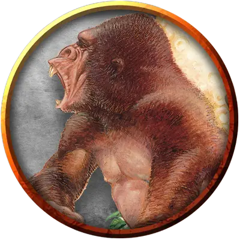

Гигантская человекообразная обезьяна
Giant Ape
Огромный Зверь, без мировоззрения

Класс Доспеха 12
Хиты 157 (15к12 + 60)
Скорость 40 футов, лазая 40 футов
| мод | спас | ||
|---|---|---|---|
| СИЛ | 23 | +6 | +6 |
| ЛОВ | 14 | +2 | +2 |
| ТЕЛ | 18 | +4 | +4 |
| мод | спас | ||
|---|---|---|---|
| ИНТ | 7 | −2 | −2 |
| МДР | 12 | +1 | +1 |
| ХАР | 7 | −2 | −2 |
Навыки Атлетика +9, Восприятие +4
Чувства пассивное Восприятие 14
Опасность 7 (2900 опыта)
Бонус мастерства +3
Среда обитания Лес
Действия
Мультиатака. Обезьяна совершает две атаки кулаком.
Кулак. Рукопашная атака оружием: +9 к попаданию, досягаемость 10 футов, одна цель. Попадание: 22 (3к10 + 6) дробящего урона.
Камень. Дальнобойная атака оружием: +9 к попаданию, дистанция 50/100 футов, одна цель. Попадание: 30 (7к6 + 6) дробящего урона.